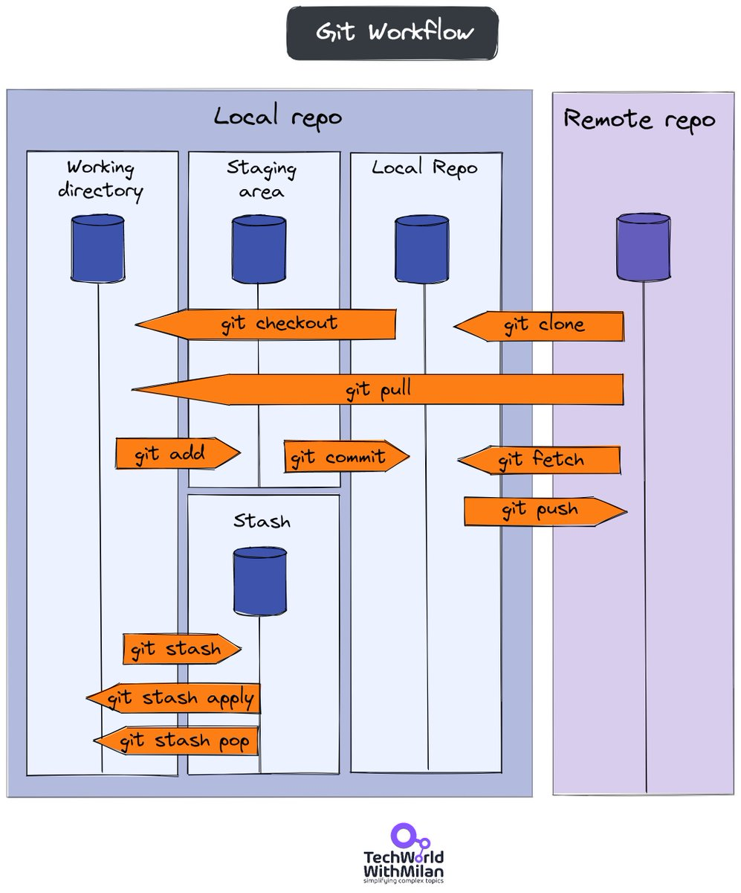

git --versionLab Git
Introduction
This lab is designed to reinforce your use of git and GitHub, the collaboration and version control system that we will be using throughout the course.
Note
Git is a version control system (like “Track Changes” features from Microsoft Word but more powerful) and GitHub is the home for your Git-based projects on the internet (like DropBox but much better).
Today we begin with an introductions to GIT followed by exercises in the fundamental building blocks of R and RStudio: the interface, reading in data, and basic commands.
Learning goals
By the end of the lab, you will…
- Have practiced version control using GitHub
- Be familiar with the workflow using R, RStudio, Git, and GitHub
Important
To access Github from the lab, you will need to make sure you are logged in as follows:
- username: .\daladmin
- password: Business507!
Let’s Git Started
1. Register a Github account
Register an account with GitHub. It’s free!
Username advice
- Incorporate your actual name! People like to know who they’re dealing with. Also it makes your username easier for people to guess or remember.
- Shorter is better than longer.
- Make it timeless. Don’t highlight your current university, employer, or place of residence, e.g. JennyFromTheBlock.
You can change your username later, but better to get this right the first time.
https://help.github.com/articles/changing-your-github-username/
https://help.github.com/articles/what-happens-when-i-change-my-username/
Note
We will be switching between the console and the terminal, in this lab and others. The Console is where you can execute R code, while the Terminal is where you can execute system functions like git.

2. Git already installed?
Go to the Terminal tab in RStudio and enter git --version to see its version:
If this instruction gives an error, it’s possible that git is not installed on your machine. If so, let your instructor know.
3. Introduce yourself to Git
Important
make sure that the package usethis has been installed. You can check under the packages tab in the file & plots viewer (e.g., do a search).
You can set your Git user name and email from within R (i.e. go back to the Console tab):
usethis::use_git_config(
# user.name does not have to be your GitHub user name
user.name = "Jane Doe"
# user.email MUST be the email associated with your GitHub account.
, user.email = "jane@example.org"
)
Note
Your commits will be labelled with this user name, so make it informative to potential collaborators and future you.
4. Set up personal access tokens for HTTPS
The password that you use to login to GitHub’s website is NOT an acceptable credential when talking to GitHub as a Git server. You can learn more in their blog post Token authentication requirements for Git operations.
The recommendation to use a personal access token (PAT) is exactly what we cover here. First you need to create your PAT, and you can do this from R (in the Console):
usethis::create_github_token()The usethis approach takes you to a pre-filled form with pre-selected some recommended scopes, which you can look over and adjust before clicking “Generate token”.
It is a very good idea to describe the token’s purpose in the Note field, because one day you might have multiple PATs. We recommend naming each token after its use case, such as the computer or project you are using it for, e.g. “personal-macbook-air” or “lab1-course-8740”. In the future, you will find yourself staring at this list of tokens, because inevitably you’ll need to re-generate or delete one of them. Make it easy to figure out which token you’ve come here to fiddle with.
Tip
If this is your first time generating a PAT, just accept the defaults and scroll to the bottom of the page and click the green Generate token button.
4.1 Click “Generate token”.
You won’t be able to see this token again, so don’t close or navigate away from this browser window until you store the PAT. Copy the PAT to the clipboard or a text file in RStudio.
Treat this PAT like a password! Do not ever hard-wire your PAT into your code! A PAT should always be retrieved implicitly, for example, from the Git credential store, a safe place, where command line Git, RStudio, and R packages can discover it.
4.2 Save your PAT
- Copy the generated PAT to a secure, long-term system for storing secrets, like 1Password or LastPass.
- email it to yourself.
- copy it onto a piece of scrap paper.
4.3 Store your PAT in the Git credential store
Finally, we store the PAT in a safe place where command line Git, RStudio, and R packages can discover it. To do this call gitcreds::gitcreds_set(). If you don’t have a PAT stored already, it will prompt you to enter your PAT. Paste!
gitcreds::gitcreds_set()Instead of saving your PAT you could just re-generate the PAT each lab session and re-store it. If you accept the default 30-day expiration period, this is a workflow you’ll be using often anyway.
On github.com, assuming you’re signed in, you can manage your personal access tokens from https://github.com/settings/tokens, also reachable via Settings > Developer settings > Personal access tokens.
Important
Given that the machines start from the same initial state each lab session, you will follow the above steps to initial your machine at the start of each lab session.
5. How Git works
Git has three storages locally: a Working directory, Staging Area, and a Local repository.
𝟭. 𝗪𝗼𝗿𝗸𝗶𝗻𝗴 𝗗𝗶𝗿𝗲𝗰𝘁𝗼𝗿𝘆 - is where you work, and your files live (“untracked”). GIT is not aware of these files.
𝟮. 𝗦𝘁𝗮𝗴𝗶𝗻𝗴 𝗔𝗿𝗲𝗮 - When you stage your changes, GIT will start tracking and saving your changes with files. These changes are stored in the .git directory.
𝟯. 𝗟𝗼𝗰𝗮𝗹 𝗥𝗲𝗽𝗼𝘀𝗶𝘁𝗼𝗿𝘆 - is the area where everything is saved (commits) in the .git directory. So, when you want to move your files from Staging Area to Local Repository, you can use the git commit command. After this, your Staging area will be empty. If you want to see what is in the Local repository, try git log.
The workflow looks like this:

You are now ready interact with GitHub via RStudio!
Clone the repo & start new RStudio project
First make sure you are logged into your own Github account on a web browser.
Next, in a new browser tab, go to the course organization site at BSMM-8740-Fall-2023 on GitHub. Click on the repo BSMM-lab-1. It contains the starter documents you need to complete the lab.
Click on the green Use this template button and select Create a new repository. This will make a copy of BSMM-lab-1 in your own github account.
Next, go back to your Github acount and select your copy of BSMM-lab-1. Click on the green CODE button, select Use HTTPS (this might already be selected by default, and if it is, you’ll see the text Clone with HTTPS). Click on the clipboard icon to copy the repo URL.
In RStudio, go to File ➛ New Project ➛Version Control ➛ Git.
Copy and paste the URL of your assignment repo (the clipboard copy you made in step 4) into the dialog box Repository URL. The project directory name should be automatically populated, but make sure you select a directory in Create project as a subdirectory of.
Finally, click Create Project, and the files from your GitHub repo will be displayed in the Files pane in RStudio.
Click bsmm-lab-1.qmd to open the template R Markdown file. This is where you will write up your code and narrative for the lab.
R and R Studio
Below are the components of the RStudio IDE.

Below are the components of a Quarto (.qmd) file.

YAML
The top portion of your R Markdown file (between the three dashed lines) is called YAML. It stands for “YAML Ain’t Markup Language”. It is a human friendly data serialization standard for all programming languages. All you need to know is that this area is called the YAML (we will refer to it as such) and that it contains meta information about your document.
Important
Open the Quarto (`.qmd`) file in your project, change the author name to your name, and render the document. Examine the rendered HTML document in the Files pane.
Committing changes
Now, go to the Git pane in your RStudio instance. This will be in the top right hand corner in a separate tab.
If you have made changes to your *.qmd file, you should see it listed here. Click on it to select it in this list and then click on Diff. This shows you the difference between the last committed state of the document and its current state including changes. You should see deletions in red and additions in green.
If you’re happy with these changes, we’ll prepare the changes to be pushed to your remote repository. First, stage your changes by checking the appropriate box on the files you want to prepare. Next, write a meaningful commit message (for instance, “updated author name”) in the Commit message box. Finally, click Commit. Note that every commit needs to have a commit message associated with it.
You don’t have to commit after every change, as this would get quite tedious. You should commit states that are meaningful to you for inspection, comparison, or restoration.
In the first few assignments we will tell you exactly when to commit and in some cases, what commit message to use. As the semester progresses we will let you make these decisions.
Push changes
Now that you have made an update and committed this change, it’s time to push these changes to your repo on GitHub.
In order to push your changes to GitHub, you must have staged your commit to be pushed. click on Push.
Now let’s make sure all the changes went to GitHub. Go to your GitHub repo and refresh the page. You should see your commit message next to the updated files. If you see this, all your changes are on GitHub and you’re good to go!
More on the basic use of git here.